CREATMAN
科技安全，美曼生活。电缸螺杆驱动，无底坑、低顶层、不限场景。
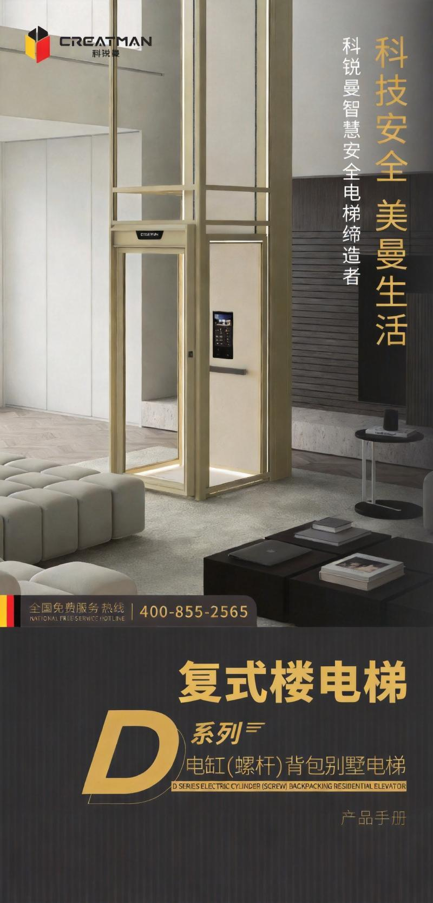
科锐曼电缸螺杆电梯 — 复式楼首选
定位
螺杆专家
技术路线
电缸螺杆
价格带
12-18 万
底坑要求
≤100mm
CREATMAN 意为"创造者"，科锐曼初心是成为科技智慧安全电梯的创造者。品牌将物联网、人工智能融入电梯，投入大量精力研发自主知识产权技术。拥有完备的资质体系——安全检测报告、荣誉资质、管理体系认证、各项专利及软件著作权。
科锐曼秉承"安全、智慧、科技、创新"理念，提供全方位售后服务，专业团队保障安装、调试、保养。全国免费服务热线：400-855-2565。
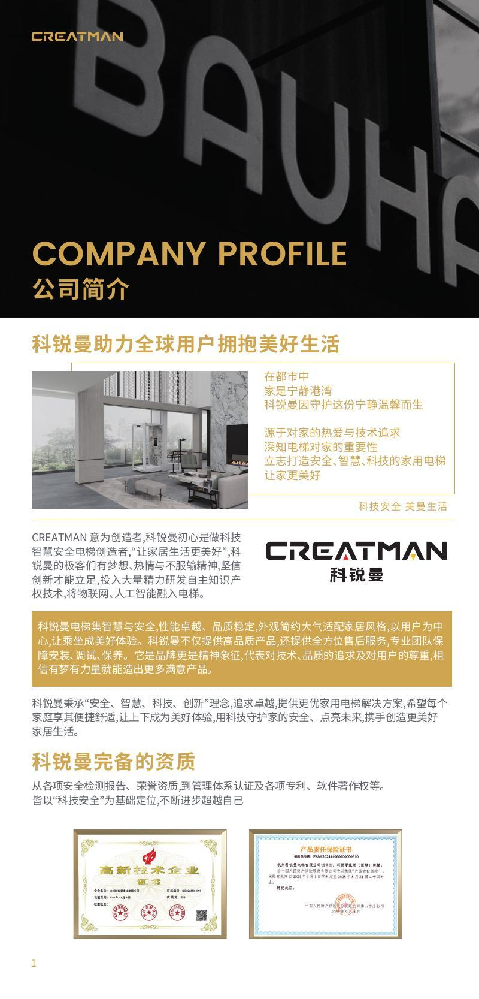
科锐曼 — 科技安全 · 美曼生活
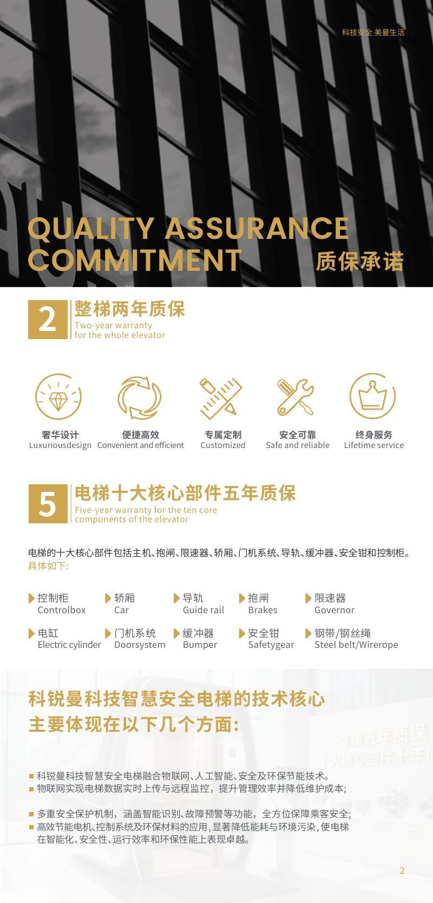
科锐曼完备资质 — 安全检测报告 · 专利 · 管理体系认证
电机带动滚珠丝杠旋转，将旋转运动转化为丝杠的直线伸缩运动。电缸的一端固定，另一端连接轿厢或平台。通过控制电机的正反转，实现电缸的推和拉，从而使轿厢升降。
电缸伺服驱动
运行更静音更平稳
机械自锁
断电不溜梯，家用更安全
免维护长寿命
无需液压油，节能环保
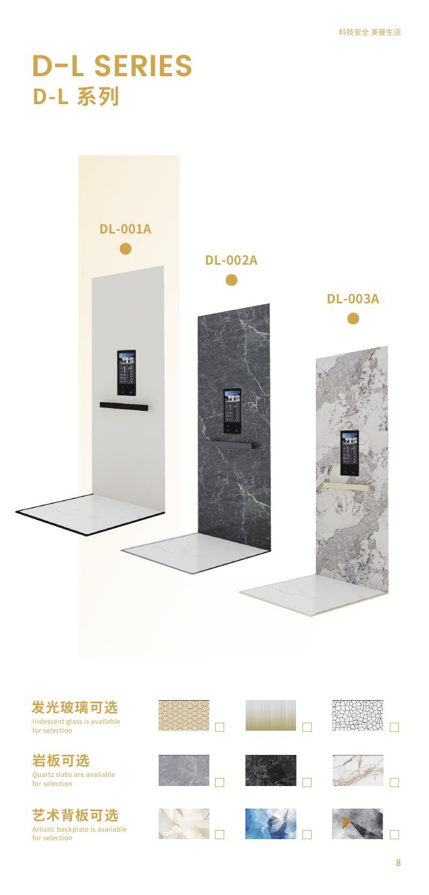
电缸螺杆工作原理 — 电机带动滚珠丝杠旋转驱动轿厢升降
专为复式楼设计，简约精致，是科锐曼的招牌产品线。
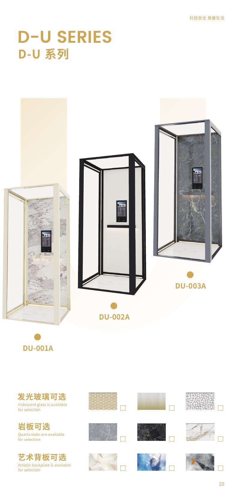
D-F 系列 — 复式楼专用电梯
不关人自救
选配，自动脱困
一键呼叫
轿厢内紧急呼叫
顶底防撞
碰撞预防装置
无井道、不限场景。铝合金框架颜色可定制、背板可定制、地坪可定制。适合别墅、老房加装、商业空间等多种场景。
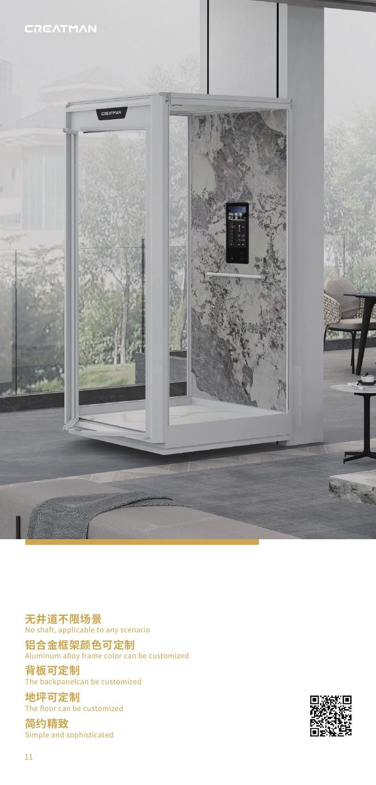
D-B 系列 — 无井道 · 不限场景
框架
铝合金框架，多色可选
玻璃
透明/磨砂/茶色可选
背板
多材质定制
奢华设计风格，更高端的材质和工艺。适合对家居美学有高要求的用户。
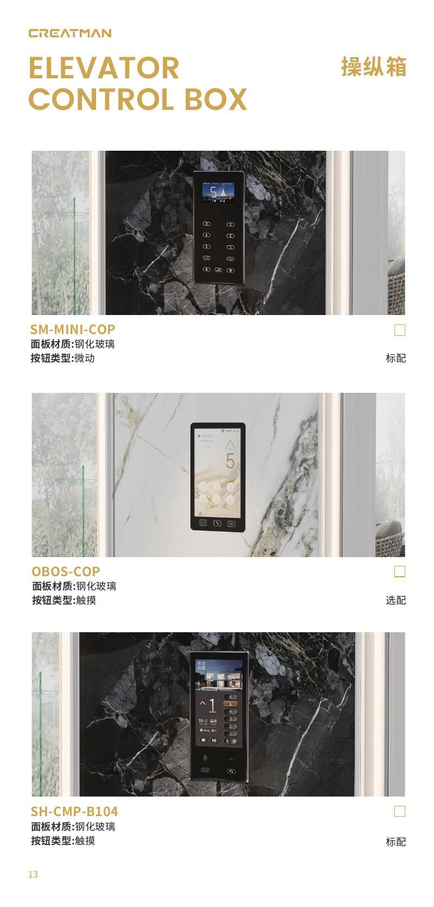
D-L 系列 — 豪华型 · 奢华设计
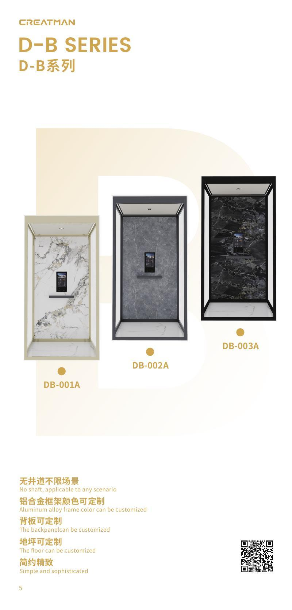
十大核心部件 — 控制柜 · 电缸 · 轿厢 · 门机系统 · 导轨等
控制柜
电缸
轿厢
门机系统
导轨
缓冲器
抱闸
安全钳
限速器
钢带/钢丝绳
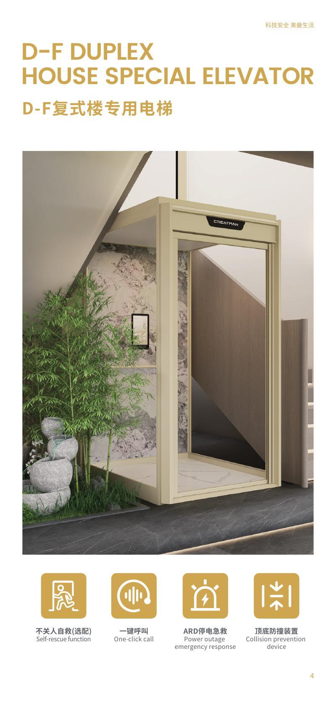
五大核心优势 — 奢华设计 · 便捷高效 · 专属定制 · 安全可靠 · 终身服务
简约大气，适配各种家居风格
1m²可装，对空间要求极低
颜色、玻璃、背板、地坪随心配
机械自锁，断电不溜梯
专业团队安装、调试、保养
顶楼复式、跃层 → D-F 系列：专为复式楼设计，不关人自救（选配）+ ARD 停电急救。
老房加装、无井道 → D-B 系列：铝合金框架，颜色/玻璃/背板/地坪全可定制。
追求奢华设计 → D-L 系列：更高端材质和工艺，适配高端家居风格。
2-3层 + 使用频率低 → 螺杆方案最优：如果超过3层或每天使用超20次，建议考虑曳引方案。
💡 谈判提示：确认是否标配 ARD 停电应急平层（不是选配）；明确螺杆的维护周期和费用；要求现场试乘体验噪音水平；确认最大提升高度是否满足你家需求。
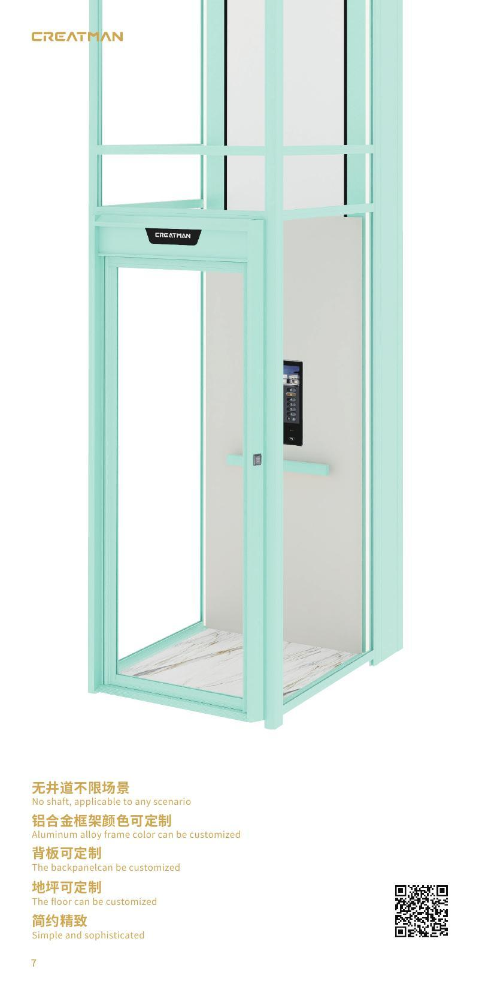
井道框架结构 — D-L / D-U / D-B
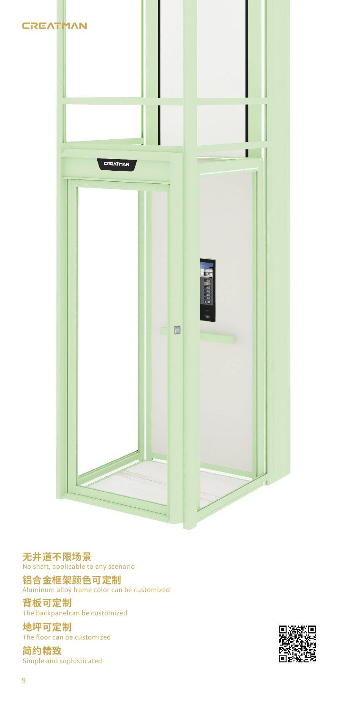
颜色可选 / 玻璃可选
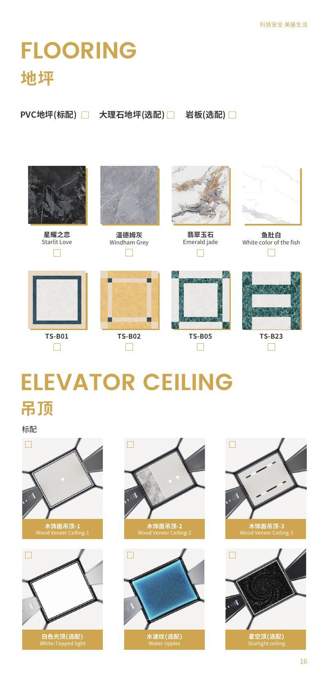
操纵箱 — 钢化玻璃面板 / 微动 / 触摸
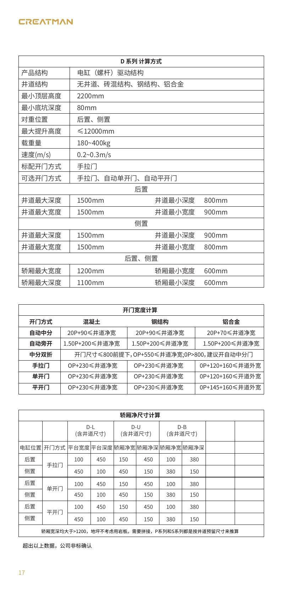
外呼 — KRM-MASONRY 触摸按钮
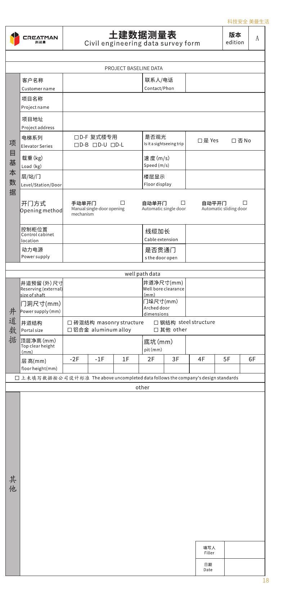
型材门 — 手动/自动单开门 / 自动平开门
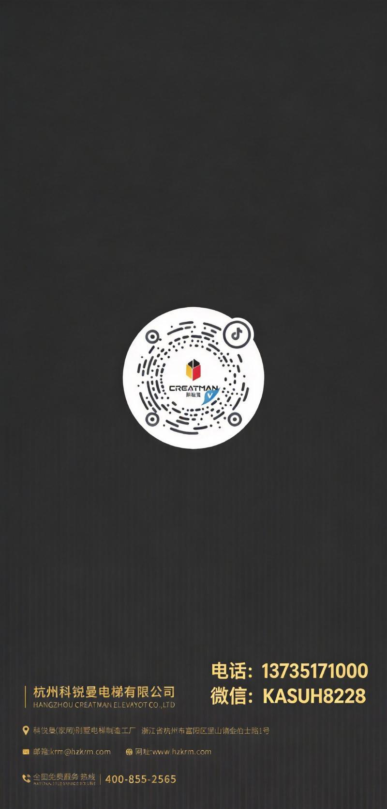
地坪（PVC/大理石/岩板）& 吊顶（木饰面/白色光顶/水波纹/星空顶）
D-F 系列专为复式楼设计，完美适配
≤100mm 底坑即可，老房加装无忧
1m² 即可安装，井道空间利用率高
螺杆速度适合中低层，高频多层建议曳引